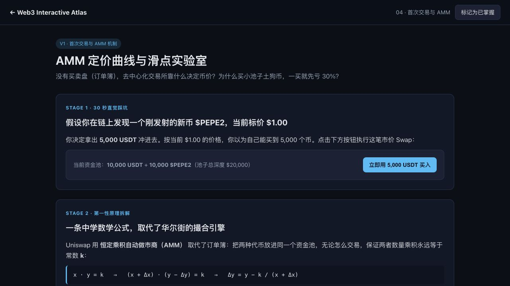

Website / interactive learning
Web3 Interactive Atlas
Explanations and interactive sandboxes
Understand wallets, transactions, DeFi, consensus and on-chain security through explanations and parameter sandboxes.

What it is
Readable explanations paired with hands-on teaching simulations of Web3 mechanisms. Follow learning routes through wallets, gas, AMMs, stablecoins, liquidation, bridges, privacy and account abstraction. Adjust parameters, inspect outcomes and connect concepts through the glossary, prerequisite links and quizzes.
Features
- 21 modules and 42 interactive experiment pages covering foundations, DeFi, infrastructure and newer applications
- Four recommended learning routes with stage filters and prerequisite guidance
- Parameter sandboxes illustrate pricing, slippage, approvals, liquidation and other mechanisms
- A glossary and 20-question scenario quiz with an exportable result sheet
- Local learning progress, backup/restore and sequential lesson navigation
Screenshots
